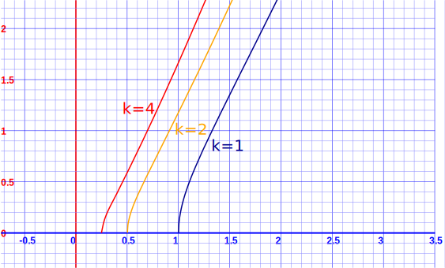
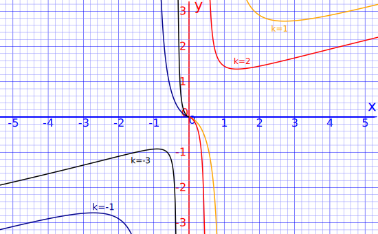
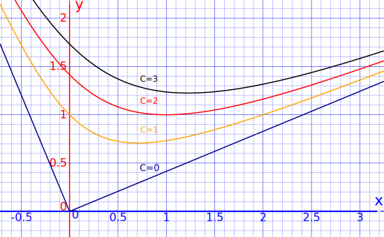

Homogeneous Differential Equations
Here we look at a special method for solving "Homogeneous Differential Equations"
Homogeneous Differential Equations
A first order Differential Equation is Homogeneous when it can be in this form:
dy dx = F( y x )
We can solve it using Separation of Variables but first we create a new variable v = y x
v = y x which is also y = vx
And
dy dx =
d (vx) dx = v
dx dx + x
dv dx (by the
Product Rule)
Which can be simplified to dy dx = v + x dv dx
Using y = vx and dy dx = v + x dv dx we can solve the Differential Equation.
An example will show how it is all done:
Example: Solve dy dx = x2 + y2xy
Can we get it in F( y x ) style?
Start with: x2 + y2 xy
Separate terms: x2 xy + y2 xy
Simplify: x y + y x
Reciprocal of first term:( y x )-1 + y x
Yes, we have a function of yx.
So let's go:
Start with: dy dx = ( y x )-1 + y x
y = vx and dydx = v + x dvdx:v + x dv dx = v-1 + v
Subtract v from both sides:x dv dx = v-1
Now use Separation of Variables:
Separate the variables:v dv = 1 x dx
Put the integral sign in front:∫v dv = ∫ 1 x dx
Integrate: v2 2 = ln(x) + C
Then we make C = ln(k): v2 2 = ln(x) + ln(k)
Combine ln: v2 2 = ln(kx)
Simplify:v = ±√(2 ln(kx))
Now substitute back v = y x
Substitute v = y x : y x = ±√(2 ln(kx))
Simplify:y = ±x √(2 ln(kx))
And we have the solution.
The positive portion looks like this:

Another example:
Example: Solve dy dx = y(x−y) x2
Can we get it in F( y x ) style?
Start with: y(x−y) x2
Separate terms: xy x2 − y2 x2
Simplify: y x − ( y x )2
Yes! So let's go:
Start with: dy dx = y x − ( y x )2
y = vx and dy dx = v + x dvdx v + x dv dx = v − v2
Subtract v from both sides:x dv dx = −v2
Now use Separation of Variables:
Separate the variables:− 1 v2 dv = 1 x dx
Put the integral sign in front:∫− 1 v2 dv = ∫ 1 x dx
Integrate: 1 v = ln(x) + C
Then we make C = ln(k): 1 v = ln(x) + ln(k)
Combine ln: 1 v = ln(kx)
Simplify:v = 1 ln(kx)
Now substitute back v = y x
Substitute v = y x : y x = 1 ln(kx)
Simplify:y = x ln(kx)
And we have the solution.
Here are some sample k values:

And one last example:
Example: Solve dy dx = x−y x+y
Can we get it in F( y x ) style?
Start with: x−y x+y
Divide through by x: x/x−y/x x/x+y/x
Simplify: 1−y/x 1+y/x
Yes! So let's go:
Start with: dy dx = 1−y/x 1+y/x
y = vx and dy dx = v + x dvdx v + x dv dx = 1−v 1+v
Subtract v from both sides:x dv dx = 1−v 1+v − v
Then:x dv dx = 1−v 1+v − v+v2 1+v
Simplify:x dv dx = 1−2v−v2 1+v
Now use Separation of Variables:
Separate the variables: 1+v 1−2v−v2 dv = 1 x dx
Put the integral sign in front:∫ 1+v 1−2v−v2 dv = ∫ 1 x dx
Integrate:− 1 2 ln(1−2v−v2) = ln(x) + C
Then we make C = ln(k):− 1 2 ln(1−2v−v2) = ln(x) + ln(k)
Combine ln:(1−2v−v2)-½ = kx
Square and Reciprocal:1−2v−v2 = 1 k2x2
Now substitute back v = y x
Substitute v = y x :1−2( y x )−( y x )2 = 1 k2x2
Multiply through by x2:x2−2xy−y2 = 1 k2
We are nearly there ... it is nice to separate out y though!
We can try to factor x2−2xy−y2 but we must do some rearranging first:
Change signs:y2+2xy−x2 = − 1 k2
Replace − 1 k2 by c:y2+2xy−x2 = c
Add 2x2 to both sides:y2+2xy+x2 = 2x2+c
Factor:(y+x)2 = 2x2+c
Square root:y+x = ±√(2x2+c)
Subtract x from both sides:y = ±√(2x2+c) − x
And we have the solution.
The positive portion looks like this:
